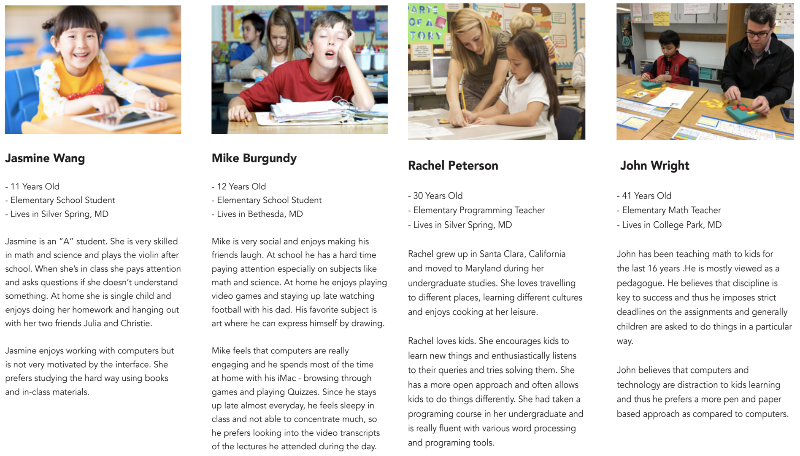
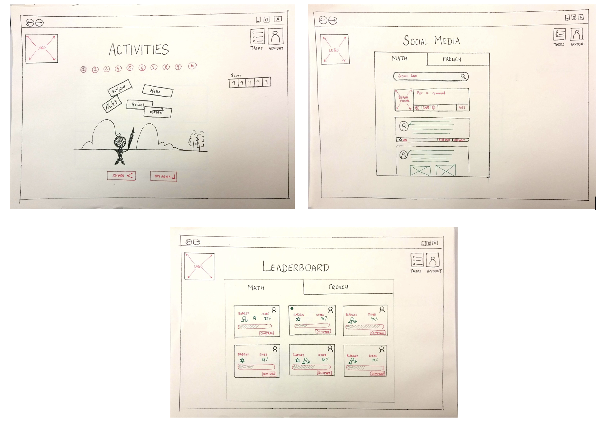
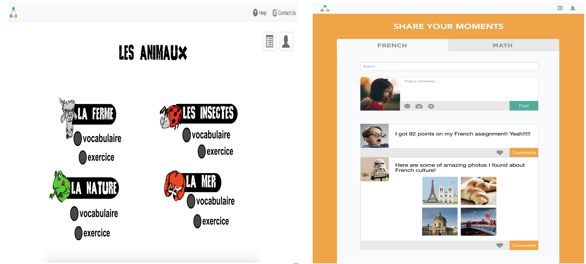
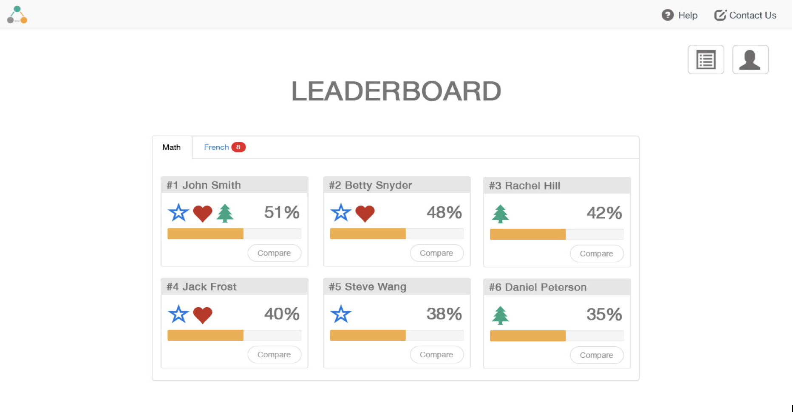

DOT DOT DOT - an interactive learning tool for the kids
- Duration: Fall 2017 - Team Project
- Course: Introduction to Human Computer Interaction
- Tools and Methods: Sketching, Contextual Inquiries, Cognitive Walkthroughs, Semi-structured interviews, Heuristic Evaluation, InVision, Adobe Photoshop, Adobe Illustrator and Adobe Indesign
- My Role: UX Researcher - developed low-fi prototypes and personas, design sketches, conducted semi-structured interviews and heuristic evaluation, designed process book and design specification using Adobe InDesign.
Overview and Motivation
Our team project is based on improving kid’s education in elementary schools through interactive learning systems. Our main motivation for choosing this project is that we observed that the kids were having great difficulty focusing on learning the materials provided in class as they were not engaged or motivated enough.
Project Goals
Through this project, we attempt to address the problem of student distraction and lack of interest while dealing with topics of difficulty. We mainly focus on the following aspects in our project-
- Making kids motivated and engaged in learning the curriculum through interactive systems
- Bring about better Parents-Kids engagement in their kid's education
- Better Parent-Teacher communication systems for both the sides to be aware of the kid's progress.
Design Process
The approach that we took to design this project is divided into five phases - Design Problem, Brainstorming, Analysis, Prototyping and Evaluation.

Design Problem
On observing a coding classroom for the elementary school kids, we noticed that the students were demotivated and were not finding the exercises engaging.
The lead causes for the kid’s lack of interest are the difficulty of the materials, different interests based on their genders, the presentation of the learning materials, and the different adaptability rates.
Problem: Distraction among Elementary Kids in Classrooms
Brainstorming and Ideation
Through semi-structured interviews with teachers and parents, we learnt that the kids were not focussed on learning the content due to their interests lying elsewhere.
The main concern that the teachers put forth was that the students were getting anxious and less-motivated as the levels of the program became more complex and it starts to become difficult for him to bring their focus to one place. The parents mentioned that they felt the use of technology to enhance their kid's knowledge is good in a way that it helps them stay engaged, motivates and promotes healthy competition in an interactive manner.
Solution: To design Engaging and Interactive Learning Experiencess
Our ideation phase involved an affinity diagramming technique followed by sketching various ideas to overcome the kid's problems.

Analysis
Personas and Scenarios were developed to aid through our brainstorming phase and to analyse how these user groups would be included in our design
Prototyping
From the sketches that we developed, three major ideas stood out - Social Media for kids to promote knowledge transfer, Leaderboard to encourage healthy competition and Game-based learning activities to engage the kids - which we have focused on our prototypes.
Low fidelity Prototyping
High fidelity Prototyping
 Evaluation
Heuristic evaluation and Cognitive walkthroughs were conducted with expert users. The users commented that our interface was easy to use and had very minor violations of the Nielsen's heurisitc. We analysed the feedback that we received and modified the high-fidelity prototype accordingly.
Video Prototype
To aid our design solution, we created a video prototype of our interactive tool using Adobe AfterEffects.